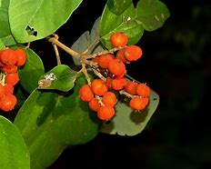

Basonym of Drug
Kumkuma
Main Synonym
- Bahlika
- Ghusruna
- Kashmira
- Peetaka
- Vara
- Sankocha
- Pishuna
- Shonitabhida
Regional Name
- Bengali: jafran
- Gujarati: keshara
- Hindi: kshara
- Kannada: kumkum
- Tamil: kumkumapu
- Telugu: kumkum puv
- English: saffron
Botanical Name
Crocus sativus
Family
Iridaceae
Classification (Gana)
- Aacharya Sushruta and Aacharya Vagbhata: eladi gana
- Bhavaprakash Nighantu: karpuradi varga
External Morphology
Small 2-3 feet high herb
Useful Parts
Flower stigma/stamens
Important Phytoconstituent
Crocetin, picrocrocin, crocin, crosatosides
Rasa Panchak
- Rasa: Tikta, katu
- Guna: snigdha
- Virya: ushna
- Vipaka: katu
Action
Kaphavatahara
Therapeutic Indication
- Varnya (good for skin)
- Sonitasthapana (hemostatic)
- Shirahashoolahara (relieves headache)
- Netrya (good for eyes)
Therapeutic Uses
- Mutrkrichha - soaked kumkuma in water overnight, take it with honey in the morning for difficult micturition.
- Pratishyay - soaked kumkuma is applied to the thorax and neck region for the common cold in children.
- Sirahshoola - kumkuma powder with cow milk and sugar is beneficial in headaches.
Dose
Powder: 0.5 to 1 gm
Formulations
- Kumkumadi taila
- Kumkumadi ghrita
- Kumkumadi lepa
Adverse Effect
Not Known